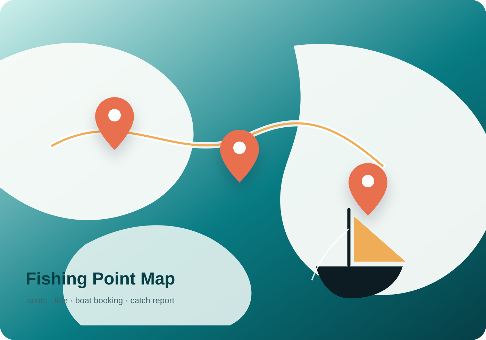
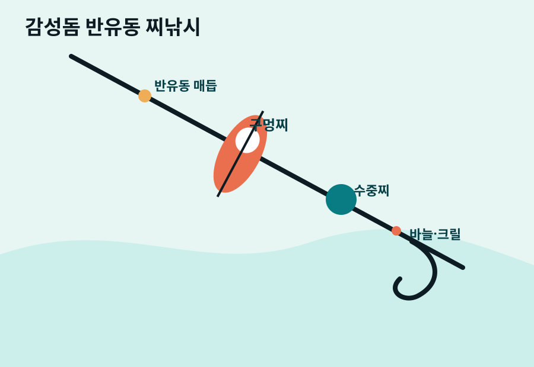
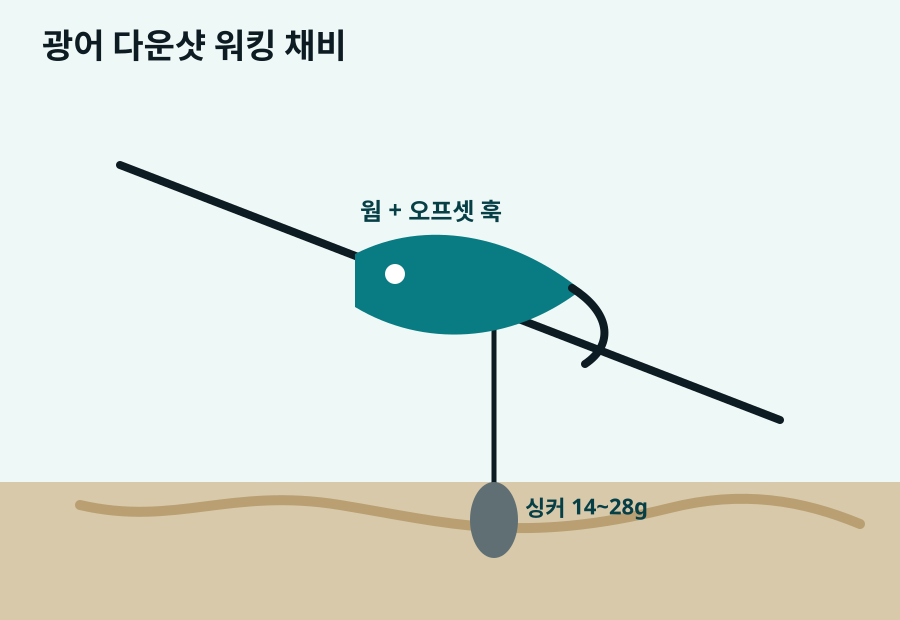
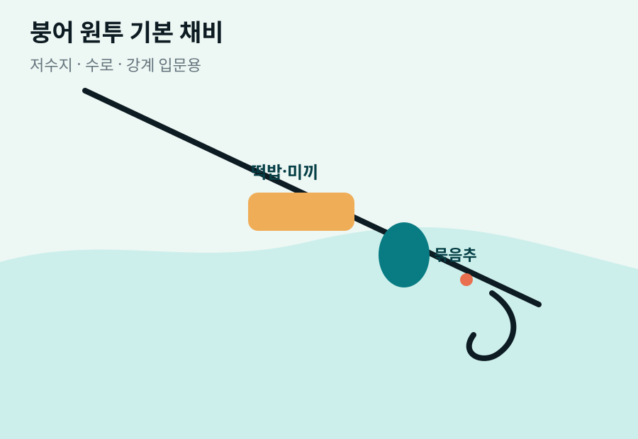

Premium Fishing Portal
출조 전 필요한 모든 정보를 한 번에.
채비법, 포인트 지도, 조황정보, 선상낚시 예약, 이벤트, 광고 문의까지 실제 운영 가능한 낚시 정보 플랫폼 형태로 구성했습니다.

실시간 조황 업데이트
오늘 추천: 만조 전후 2시간
AD AREA
상단 프리미엄 광고 영역
Google AdSense, 낚시용품 쇼핑몰, 선상 예약 제휴 배너를 넣기 좋은 자리입니다.
responsive-banner
Rig Masterclass
디테일 채비법
초보자가 그대로 따라 할 수 있도록 원줄, 목줄, 봉돌, 바늘, 운용 포인트까지 정리했습니다.

바다 · 초보
감성돔 반유동 찌낚시
조류를 타고 미끼를 자연스럽게 흘리는 대표 방파제·갯바위 채비입니다.
- 원줄 2.5~3호, 목줄 1.5~2호
- 구멍찌 B~1호, 수중찌, 쿠션고무
- 만조 전후 조류가 살아날 때 집중

루어 · 바다
광어 다운샷 워킹 채비
바닥을 읽으며 넓게 탐색하기 좋은 루어 채비입니다. 모래와 자갈 지형에 강합니다.
- 합사 0.8~1.2호, 쇼크리더 3~4호
- 다운샷 싱커 14~28g, 3~4인치 웜
- 바닥 찍고 2~3회 액션 후 스테이

민물 · 초보
붕어 원투 기본 채비
저수지, 수로, 강계에서 안정적으로 운용할 수 있는 입문형 민물 채비입니다.
- 원투대 2.7~3.6m, 묶음추 10~20호
- 떡밥, 지렁이, 옥수수 미끼 운용
- 밤낚시는 랜턴과 안전 장비 필수
Point Finder
지도 연결 포인트 추천
네이버 지도와 구글 지도 검색으로 바로 연결됩니다. 실제 서비스에서는 지도 API 마커로 확장할 수 있습니다.
서해 · 방파제
태안 안면도 방포항
생활낚시와 가족 출조에 좋은 포인트. 만조 전후 우럭, 노래미, 광어 탐색에 적합합니다.
- 추천 시간
- 만조 전 1시간~후 2시간
- 대상어
- 우럭·노래미·광어
- 편의
- 주차·편의시설
수도권 · 워킹 루어
한강 반포대교 주변
퇴근 후 짧게 다녀오기 좋은 도심 포인트. 해질녘 베이트피시 움직임을 확인하세요.
- 추천 시간
- 해질녘~야간 초반
- 대상어
- 배스·강준치·누치
- 편의
- 대중교통 우수
남해 · 선상
통영 삼덕항
한치, 참돔, 볼락 선상낚시 출항지. 예약 전 기상과 장비 대여 여부를 확인하세요.
- 추천 시간
- 출항 일정 기준
- 대상어
- 한치·참돔·볼락
- 편의
- 선사 다수
Boat Booking
선상낚시 예약
예약 기능은 프론트 화면 샘플입니다. 실제 운영 시 예약 API나 카카오 알림톡을 연결하면 됩니다.
한치 야간 선상
출항 18:30 · 잔여 5석 · 장비 대여 가능
85,000원우럭·광어 종일반
출항 06:00 · 잔여 3석 · 초보 동승 가능
110,000원참돔 타이라바
출항 05:30 · 잔여 2석 · 중급자 추천
130,000원Catch Reports
조황정보 · 낚시 조황
지역, 대상어, 채비를 함께 보여줘서 검색 유입과 체류 시간을 늘릴 수 있는 영역입니다.
태안권 방파제 우럭 조황
지그헤드 7g, 3인치 웜에 반응. 만조 직후 입질 집중.
통영 한치 야간 선상
집어등 켠 뒤 40분부터 꾸준한 입질. 에기 2.5호 추천.
한강 워킹 루어
해질녘 강준치 피딩 확인. 소형 메탈과 미노우 반응.
서해 남서풍 체크
바람 강한 날은 내항권과 방파제 안쪽 포인트 우선 추천.
Events
이벤트 · 제휴 프로모션
Contact
문의 · 광고 · 제휴
선상 예약, 포인트 제보, 조황 제보, 광고 문의를 받을 수 있는 폼입니다.